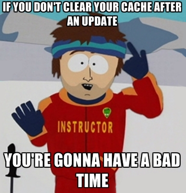

Начинаем дружить с кешем
07/29/16
Или как правильно отдавать статику
О чём это?
Одним из самых значимых, на мой взгляд, плюсов реализации проекта в виде веб-приложения является простота обновления рабочей версии. Которая конечно же вытекает из клиент-серверной архитектуры. Чтобы что-то исправить вам надо просто обновить ваш сервер(а), и при следующей загрузке страницы пользователь увидит …